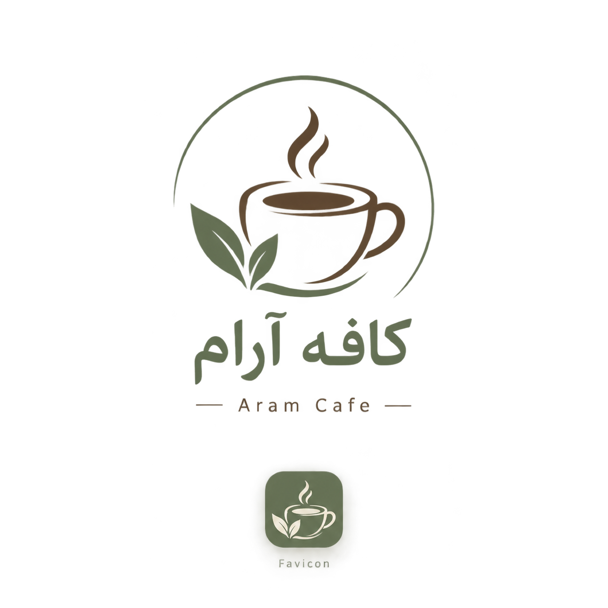
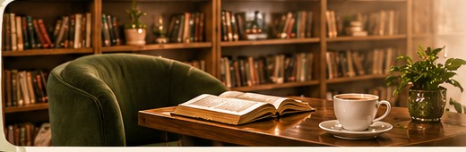
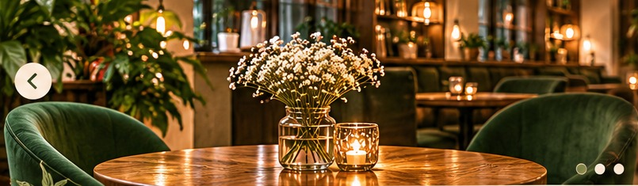
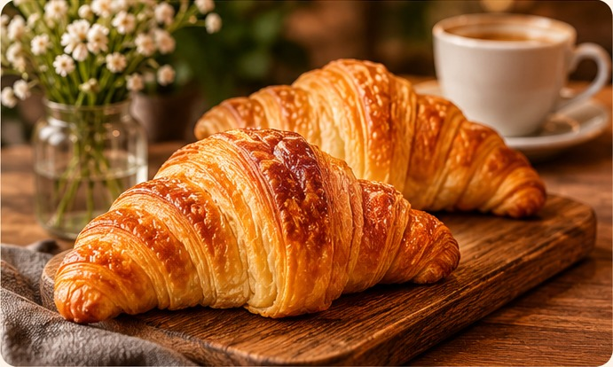

گوشهای برای کتابخوانی
نوشیدنیهایی خوشعطر برای لحظههایی که میخواهی از خودت پذیرایی کنی.

🛒گاهی برای پیدا کردن حال خوب، فقط به یک گوشه دنج، عطر قهوه و چند دقیقه آرامش نیاز داریم.
کافه آرام با رویای ساختن گوشهای دنج شکل گرفت؛ جایی شبیه یک کتابخانه کوچک و دوستداشتنی، با قفسههای کتاب، صندلیهای راحت و میزهایی برای نوشیدن قهوه و خواندن چند صفحه کتاب.
اینجا میتوانی کتاب مورد علاقهات را همراه یک فنجان قهوه ورق بزنی، پشت میز کنار پنجره بنشینی یا با دوستانت گفتوگویی آرام داشته باشی. قفسههای کتاب، نور گرم چراغها و عطر قهوه، کنار هم فضایی میسازند که از شلوغی روز فاصله بگیری.
داستان کافه آرام، داستان مکثهای کوتاه و خاطرههای شیرین است؛ جایی برای نوشیدن یک فنجان آرامش، خواندن یک کتاب خوب و لذت بردن از لحظهها.

«یک فنجان قهوه، یک گوشه دنج و فرصتی برای آرامتر زندگی کردن.»
شعار کافه آرام
سه بخش کوچک از تجربهای که دوست داریم با تو شریک شویم.
نوشیدنیهایی خوشعطر برای لحظههایی که میخواهی از خودت پذیرایی کنی.

خوراکیهای خوشمزهای که کنار قهوه، روزت را دلپذیرتر میکنند.

جایی برای گفتوگو، مطالعه، استراحت و ساختن خاطرههای ساده.